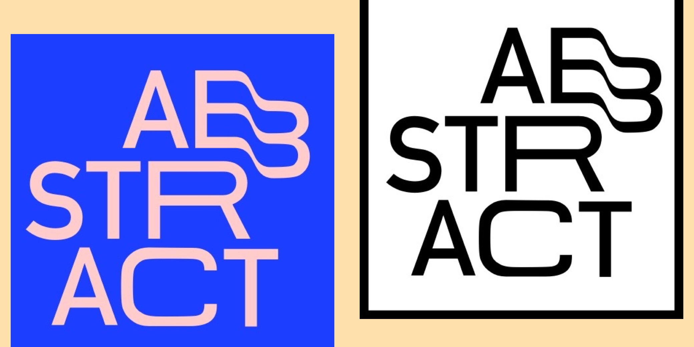

Overview.
For these typographic compositions, I wanted to test my abilities in manipulating letterforms in Sketch. I wanted to stretch and distort them, giving them an almost melted “vaporwave” effect.
Made with Sketch.
The design.
I really wanted to test myself and see just how different I could make the very generic Google font Roboto (which is a wonderful font, just highly overused). Therefore, I decided to stretch Roboto Condensed’s letterforms outwards and then down, adjusting bezier curves as needed to create smooth transitions in the B of “Abstract”. I settled on these two color palettes, which I felt gave it a modern, street feel.
